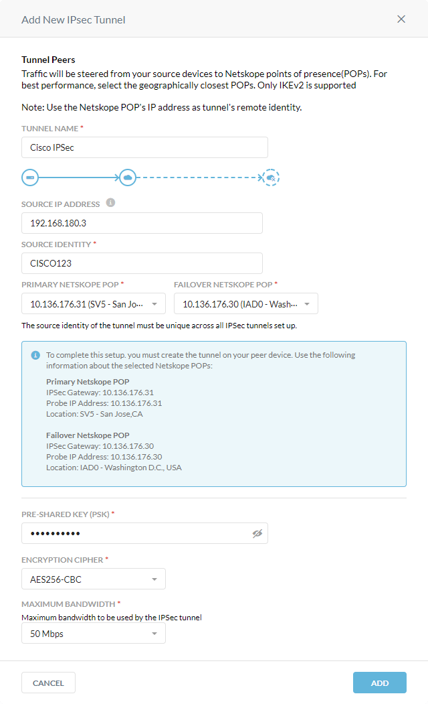

Netskope IPSec with Cisco IOS
Netskope supports Internet Protocol Security (IPSec) tunnels as a traffic steering method. IPSec tunnels allow you to route web traffic (port 80 and 443) to Netskope using logical tunnel interfaces that terminate to a Netskope IPSec gateway. When you create IPSec tunnels in the Netskope UI, Netskope provides parameters for configuring the tunnels on your firewall. The IPSec configuration below utilizes Cisco IOS XE commands and concepts.
This guide illustrates how to configure GRE tunnels between Netskope and the following Cisco routers:
Cisco CSR 1000v (VXE) running IOS XE version 17.03.03
Cisco ISR 3900 (C3900-UNIVERSALK9-M) running IOS XE version 15.4(3)M3
IPSec has two modes: tunnel mode and transport mode. This guide is for tunnel mode. To learn more about the CLI steps on Cisco IOS XE, see the Cisco documentation.
Prerequisites
Before configuring IPSec, review the prerequisites.
To create the IPSec tunnels for Cisco routers in the Netskope UI:
Go to Settings > Security Cloud Platform > IPSec.
Click Add New Tunnel.
In the Add New IPSec Tunnel window:
Tunnel Name: Enter a name for the IPSec tunnel.
Source IP Address: (Optional) Enter the source peer IP address (i.e., exit public IP) of the Cisco router that Netskope will receive packets from. Netskope identifies traffic belonging to your organization through your router or firewall IP addresses.
Source Identity: Enter an IP address, a fully-qualified domain name (FQDN), or an ID in email address format. For example, 1.1.1.1 or sourcelocation@company.com. The router or firewall uses the source identity for authentication during Internet Key Exchange (IKE).
Primary Netskope POP: Select the primary Netskope point of presence (POP) closest to you, and copy the IPSec Gateway IP address. You need this information to establish the primary IPSec tunnel on your Cisco router. For optimal performance, Netskope recommends using the geographically closest POPs and configuring at least two tunnels for each egress location in your network.
Failover Netskope POP: Select the backup Netskope POP closest to you, and copy the IPSec Gateway IP address. You need this information to establish the backup IPSec tunnel on your Cisco router. For optimal performance, Netskope recommends using the geographically closest POPs and configuring at least two tunnels for each egress location in your network.
Pre-Shared Key (PSK): Enter the pre-shared key that both sides of the tunnel will use to authenticate one another. The PSK must be unique for each tunnel.
Encryption Cipher: Select an encryption algorithm for the IPSec tunnel.
Maximum Bandwidth: Enter the maximum bandwidth for the IPSec tunnel. The tunnel size can be up to 250 Mbps.
Click Add.
Configure two IKEv2 key rings for your primary and backup IPSec tunnels.
Log in to your Cisco router.
Enter configuration mode:
# configure terminal
Enter an IKEv2 key ring name for the primary IPSec tunnel:
(config)# crypto ikev2 keyring nskpkey1
Enter a peer name for the primary IPSec tunnel:
(config-ikev2-keyring)# peer ipsecgw
Enter the IP address for the peer:
(config-ikev2-keyring-peer)# address 10.136.176.30
Enter the PSK for the peer:
(config-ikev2-keyring-peer)# pre-shared-key local NetskopeTest
Enter an IKEv2 key ring name for the backup IPSec tunnel:
(config)# crypto ikev2 keyring nskpkey2
Enter a peer name for the backup IPSec tunnel:
(config-ikev2-keyring)# peer ipsecgw2
Enter the IP address for the peer:
(config-ikev2-keyring-peer)# address 10.136.176.31
Enter the PSK for the peer:
(config-ikev2-keyring-peer)# pre-shared-key local NetskopeTest
Configure two IKEv2 profiles to associate with your IKEv2 key rings. The IKEv2 profiles define the nonnegotiable parameters of the IKE SA.
Enter an IKEv2 profile name for the primary IPSec tunnel:
(config)# crypto ikev2 profile nsprofile1
Define the match statement for the primary IKEv2 profile:
(config-ikev2-profile)# match identity remote address 10.136.176.30 255.255.255.255
Enter the local IKEv2 identity:
(config-ikev2-profile)# identity local fqdn cisco123
Define the remote authentication method:
(config-ikev2-profile)# authentication remote pre-share
Define the local authentication method:
(config-ikev2-profile)# authentication local pre-share
Enter the IKEv2 key ring name you configured for the backup IPSec tunnel:
(config-ikev2-profile)# keyring local nskpkey1
Enable Dead Peer Detection (DPD) and enter an interval:
(config-ikev2-profile)# dpd 10 2 periodic
Enter an IKEv2 profile name for the backup IPSec tunnel:
(config)# crypto ikev2 profile nsprofile2
Define the match statement for the backup IKEv2 profile:
(config-ikev2-profile)# match identity remote address 10.136.176.31 255.255.255.255
Enter the local IKEv2 identity:
(config-ikev2-profile)# identity local fqdn cisco4567
Define the remote authentication method:
(config-ikev2-profile)# authentication remote pre-share
Define the local authentication method:
(config-ikev2-profile)# authentication local pre-share
Enter the IKEv2 key ring name you configured for the backup IPSec tunnel:
(config-ikev2-profile)# keyring local nskpkey2
Enable DPD and enter an interval:
(config-ikev2-profile)# dpd 10 2 periodic
The transform set defines the security protocols and algorithms that the peers agree to use during the IPSec SA negotiation.
Enter a name for the transform set and define the authentication and encryption algorithms:
(config)# crypto ipsec transform nskptrans esp-gcm 256
Define the IPSec mode:
(cfg-crypto-trans)# mode tunnel
Configure two IPSec profiles to associate with your transform set and IKEv2 profiles.
Enter an IPSec profile name for the primary IPSec tunnel:
(config)# crypto ipsec profile ipsec-prof-nskp1
Enter the Defining the IPSec Transform Set you defined for the IPSec tunnels:
(ipsec-profile)# set transform-set nskptrans
Enter the IKEv2 profile name you configured for the primary IPSec tunnel:
(ipsec-profile)# set ikev2-profile nsprofile1
Enter an IPSec profile name for the backup IPSec tunnel:
(config)# crypto ipsec profile ipsec-prof-nskp2
Enter the Defining the IPSec Transform Set you defined for the IPSec tunnels:
(ipsec-profile)# set transform-set nskptrans
Enter the IKEv2 profile name you configured for the backup IPSec tunnel:
(ipsec-profile)# set ikev2-profile nsprofile2
Create two tunnel interfaces to associate with your IPSec profiles.
Create your primary tunnel interface with an ID:
(config)# interface Tunnel1
Enter a local IP address for the interface. It can be any one you choose.
(config-if)# ip address 10.0.0.1 255.255.255.0
Set the tunnel source interface, which is the interface that the tunnel is attached to. It's typically the public interface of the router.
(config-if)# tunnel source 192.168.180.3
Define the tunnel mode:
(config-if)# tunnel mode ipsec ipv4
Set the tunnel destination to the IP address of the primary Netskope POP, which you copied in Creating IPSec Tunnels in Netskope:
(config-if)# tunnel destination 10.136.176.30
Enter the IPSec profile name you configured for the primary IPSec tunnel:
(config-if)# tunnel protection ipsec-prof-nskp1
Create your backup tunnel interface with an ID:
(config)# interface Tunnel2
Enter a local IP address for the interface. It can be any one you choose.
(config-if)# ip address 9.0.0.1 255.255.255.0
Set the tunnel source interface, which is the interface that the tunnel is attached to. It's typically the public interface of the router.
(config-if)# tunnel source 192.168.180.3
Define the tunnel mode:
(config-if)# tunnel mode ipsec ipv4
Set the tunnel destination to the IP address of the backup Netskope POP, which you copied in Creating IPSec Tunnels in Netskope:
(config-if)# tunnel destination 10.136.176.31
Enter the IPSec profile name you configured for the backup IPSec tunnel:
(config-if)# tunnel protection ipsec-prof-nskp2
You can use the route map to only route web traffic on ports 80 and 443 to through the IPSec tunnels.
To configure an access control list (ACL) and route map:
Create an ACL for the traffic you want to match and apply the route map to:
(config)# access-list 101 permit tcp any any eq www (config)# access-list 101 permit tcp any any eq 443
Define a route map to match traffic against:
(config)# route-map netskope permit 5
Assign the access-list to the route map you created in Step 2:
(config-route-map)# match ip address 101
Set the tunnel interfaces in order of priority:
(config-route-map)# set interface Tunnel1 Tunnel2
Apply the route map to the interface that the traffic must be rerouted from:
(config-route-map)# interface GigabitEthernet0/1 (config-if)# ip policy route-map netskope
Below is a sample CLI IPSec tunnel configuration for Cisco routers:
crypto ikev2 keyring nskpkey1 peer ipsecgw address 10.136.176.30 pre-shared-key NetskopeTest ! crypto ikev2 keyring nskpkey2 peer ipsecgw2 address 10.136.176.31 pre-shared-key NetskopeTest ! crypto ikev2 profile nsprofile1 match fvrf any match identity remote address 10.136.176.30 255.255.255.255 identity local fqdn cisco123 authentication remote pre-share authentication local pre-share keyring local nskpkey1 dpd 10 2 periodic ! crypto ikev2 profile nsprofile2 match fvrf any match identity remote address 10.136.176.31 255.255.255.255 identity local fqdn cisco4567 authentication remote pre-share authentication local pre-share keyring local nskpkey2 dpd 10 2 periodic ! crypto ipsec transform-set nskptrans esp-gcm 256 mode tunnel ! crypto ipsec profile ipsec-prof-nskp1 set transform-set nskptrans set ikev2-profile nsprofile1 ! crypto ipsec profile ipsec-prof-nskp2 set transform-set nskptrans set ikev2-profile nsprofile2 ! interface Tunnel1 ip address 10.0.0.1 255.255.255.0 tunnel source 192.168.180.3 tunnel mode ipsec ipv4 tunnel destination 10.136.176.30 tunnel protection ipsec profile ipsec-prof-nskp1 ! interface Tunnel2 ip address 9.0.0.1 255.255.255.0 tunnel source 192.168.180.3 tunnel mode ipsec ipv4 tunnel destination 10.136.176.31 tunnel protection ipsec profile ipsec-prof-nskp2 ! interface GigabitEthernet0/0 description "External network - VLAN180" ip address 192.168.180.3 255.255.252.0 ip nat outside ip virtual-reassembly in duplex auto speed auto ! interface GigabitEthernet0/1 description "Internal network - VLAN119" ip address 192.168.119.3 255.255.255.0 ip virtual-reassembly in ip policy route-map netskope duplex auto speed auto ! route-map netskope permit 5 match ip address 101 set interface Tunnel1 Tunnel2 ! access-list 101 permit tcp any any eq www access-list 101 permit tcp any any eq 443
You can use any of the following commands to troubleshoot the IPSec tunnels on the Cisco router:
Enter the following command to troubleshoot Phase 1:
# show crypto ikev2 sa
The CLI output should similar to the following:
csr#sh crypto ikev2 session
IPv4 Crypto IKEv2 Session
Session-id:3326, Status:UP-ACTIVE, IKE count:1, CHILD count:1
Tunnel-id Local Remote fvrf/ivrf Status
2 10.2.10.85/4500 66.151.135.63/4500 none/none READY
Encr: AES-CBC, keysize: 256, PRF: SHA384, Hash: SHA384, DH Grp:14, Auth sign: PSK, Auth verify: PSK
Life/Active Time: 86400/11454 sec
Child sa: local selector 0.0.0.0/0 - 255.255.255.255/65535
remote selector 0.0.0.0/0 - 255.255.255.255/65535
ESP spi in/out: 0x8013BA61/0xC34C9E57
Session-id:3325, Status:UP-ACTIVE, IKE count:1, CHILD count:1
Tunnel-id Local Remote fvrf/ivrf Status
1 10.2.10.85/4500 163.116.136.184/4500 none/none READY
Encr: AES-CBC, keysize: 256, PRF: SHA384, Hash: SHA384, DH Grp:14, Auth sign: PSK, Auth verify: PSK
Life/Active Time: 86400/19347 sec
Child sa: local selector 0.0.0.0/0 - 255.255.255.255/65535
remote selector 0.0.0.0/0 - 255.255.255.255/65535
ESP spi in/out: 0x49262441/0xC09E0275
IPv6 Crypto IKEv2 Session
csr#sh crypto ikev2 sa
IPv4 Crypto IKEv2 SA
Tunnel-id Local Remote fvrf/ivrf Status
2 10.2.10.85/4500 66.151.135.63/4500 none/none READY
Encr: AES-CBC, keysize: 256, PRF: SHA384, Hash: SHA384, DH Grp:14, Auth sign: PSK, Auth verify: PSK
Life/Active Time: 86400/11123 sec
Tunnel-id Local Remote fvrf/ivrf Status
1 10.2.10.85/4500 163.116.136.184/4500 none/none READY
Encr: AES-CBC, keysize: 256, PRF: SHA384, Hash: SHA384, DH Grp:14, Auth sign: PSK, Auth verify: PSK
Life/Active Time: 86400/19016 sec
IPv6 Crypto IKEv2 SA Enter the following command to troubleshoot Phase 2:
# show crypto ipsec sa
The CLI output should similar to the following:
csr#sh crypto ipsec sa
interface: Tunnel1
Crypto map tag: Tunnel1-head-0, local addr 10.2.10.85
protected vrf: (none)
local ident (addr/mask/prot/port): (0.0.0.0/0.0.0.0/0/0)
remote ident (addr/mask/prot/port): (0.0.0.0/0.0.0.0/0/0)
current_peer 163.116.136.184 port 4500
PERMIT, flags={origin_is_acl,}
#pkts encaps: 151253, #pkts encrypt: 151253, #pkts digest: 151253
#pkts decaps: 3771, #pkts decrypt: 3771, #pkts verify: 3771
#pkts compressed: 0, #pkts decompressed: 0
#pkts not compressed: 0, #pkts compr. failed: 0
#pkts not decompressed: 0, #pkts decompress failed: 0
#send errors 0, #recv errors 0
local crypto endpt.: 10.2.10.85, remote crypto endpt.: 163.116.136.184
plaintext mtu 1438, path mtu 1500, ip mtu 1500, ip mtu idb GigabitEthernet1
current outbound spi: 0xC5EB7597(3320542615)
PFS (Y/N): N, DH group: none
inbound esp sas:
spi: 0x7B464481(2068202625)
transform: esp-gcm 256 ,
in use settings ={Tunnel UDP-Encaps, }
conn id: 17496, flow_id: CSR:15496, sibling_flags FFFFFFFF80000048, crypto map: Tunnel1-head-0
sa timing: remaining key lifetime (k/sec): (2560/73)
IV size: 8 bytes
replay detection support: Y
Status: ACTIVE(ACTIVE)
inbound ah sas:
inbound pcp sas:
outbound esp sas:
spi: 0xC5EB7597(3320542615)
transform: esp-gcm 256 ,
in use settings ={Tunnel UDP-Encaps, }
conn id: 17495, flow_id: CSR:15495, sibling_flags FFFFFFFF80000048, crypto map: Tunnel1-head-0
sa timing: remaining key lifetime (k/sec): (2552/73)
IV size: 8 bytes
replay detection support: Y
Status: ACTIVE(ACTIVE)
outbound ah sas:
outbound pcp sas:
interface: Tunnel2
Crypto map tag: Tunnel2-head-0, local addr 10.2.10.85
protected vrf: (none)
local ident (addr/mask/prot/port): (0.0.0.0/0.0.0.0/0/0)
remote ident (addr/mask/prot/port): (0.0.0.0/0.0.0.0/0/0)
current_peer 66.151.135.63 port 4500
PERMIT, flags={origin_is_acl,}
#pkts encaps: 110, #pkts encrypt: 110, #pkts digest: 110
#pkts decaps: 112, #pkts decrypt: 112, #pkts verify: 112
#pkts compressed: 0, #pkts decompressed: 0
#pkts not compressed: 0, #pkts compr. failed: 0
#pkts not decompressed: 0, #pkts decompress failed: 0
#send errors 0, #recv errors 0
local crypto endpt.: 10.2.10.85, remote crypto endpt.: 66.151.135.63
plaintext mtu 1438, path mtu 1500, ip mtu 1500, ip mtu idb GigabitEthernet1
current outbound spi: 0xCF1B446D(3474670701)
PFS (Y/N): N, DH group: none
inbound esp sas:
spi: 0x5C1B62E4(1545298660)
transform: esp-gcm 256 ,
in use settings ={Tunnel UDP-Encaps, }
conn id: 17494, flow_id: CSR:15494, sibling_flags FFFFFFFF80000048, crypto map: Tunnel2-head-0
sa timing: remaining key lifetime (k/sec): (2560/46)
IV size: 8 bytes
replay detection support: Y
Status: ACTIVE(ACTIVE)
inbound ah sas:
inbound pcp sas:
outbound esp sas:
spi: 0xCF1B446D(3474670701)
transform: esp-gcm 256 ,
in use settings ={Tunnel UDP-Encaps, }
conn id: 17493, flow_id: CSR:15493, sibling_flags FFFFFFFF80000048, crypto map: Tunnel2-head-0
sa timing: remaining key lifetime (k/sec): (2560/46)
IV size: 8 bytes
replay detection support: Y
Status: ACTIVE(ACTIVE) outbound ah sas:
outbound pcp sas: